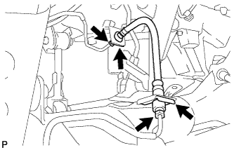

Removal Rearflexible Hose (4WD) Remove |
| 1. Precautions for brake piping work |
reference)| 2. Remove the rear tire |
| 3. Brake fluid pull -out |
| 4. Remove the rearfall flexible hose |
|  |
Use Union Nut wrench 10 to separate two brake tubes.
Remove the two clips and remove the rear brake flexible hose LH.